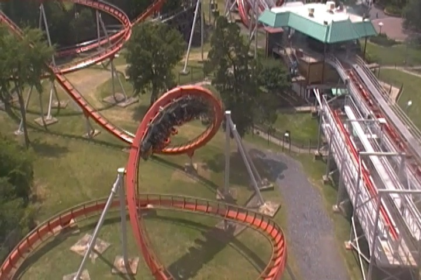
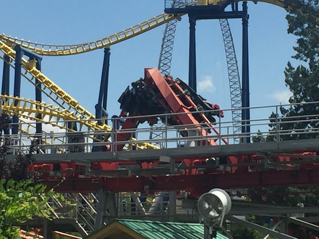
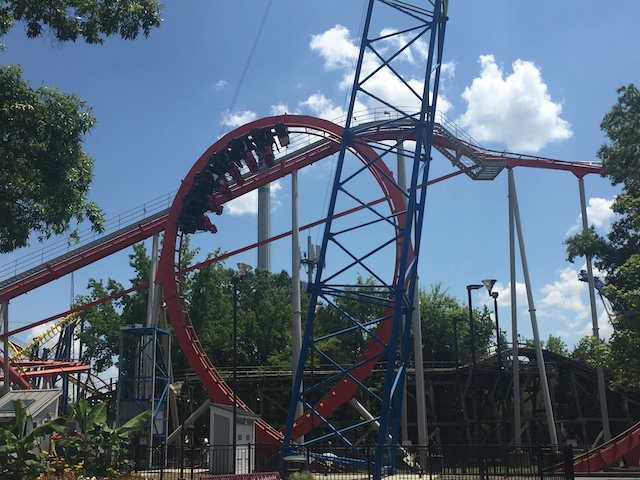
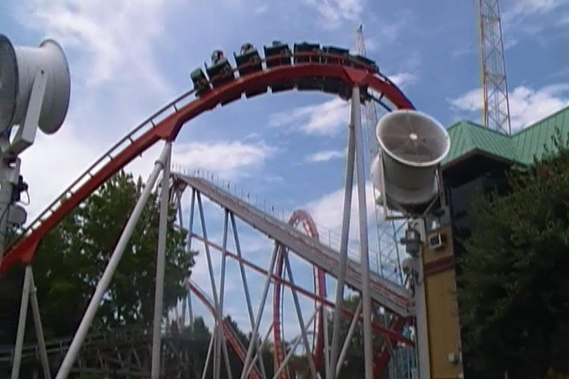
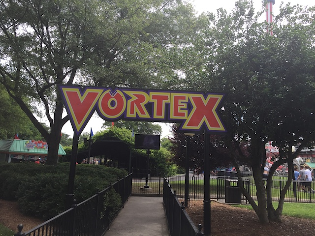

| |
Vortex Review

We're here at Carowinds to ride Vortex. You straddle the seat to a comfortable setting, pull down the OTSR, and then we're off! We start by heading up the lifthill. While it's not a very high climb, you still get a good view of Carowinds. Then we reach the top. We dip down the pre drop, tilt to the right and fall down the first drop. We gain a good amount of speed for a small drop. But before anything else can be said, we fly into a vertical loop. One moment, we're head over heels, the next thing, you know, you're back on the ground right side up. We then head up a curved hill. I know this element gets some complaints about headbanging. And yeah. I can see where they come from. There can be a little bit of a rattle here, and ocasionally even a smack. But this ride is fun. It's not that bad. We then head down a small drop, nothing really crazy. But it's fun. We then head into this banked turn to the ground. These things are fun, though you might get a little head smack here. And this isn't a low to the ground turn. It's an upward helix. Cause yeah. You wind up in the air at the end of this thing. Down another small drop, and into a corkscrew. Yeah. We just sort of tumble right through this corkscrew. It's not graceful to say the least. But hey. It's still a fun inversion. We then head into another upward helix. Not smooth, but not too bad either. Head down a curved drop in the other direction and then actually do head into a low to the ground turn. Eventually, we head up a curved hill into the brake run. So yeah. You can definetly tell that this is one of B&Ms first ever coasters. There's not too much to it. A loop, a corkscrew, lots of twisty bits. Yeah, it's not exactly smooth and a little bit of a rattle, but it's still a...decent ride. Honestly, it really reminds of Vortex @ CGA back before they turned it into a floorless coaster called Patriot. Honestly, I really would not be surprised if Vortex at Carowinds wound up getting the floorless treatment a couple years from now thanks to the success of Patriot. It really made that ride a lot better and it'd probably do the same for Vortex here. Just don't lay a finger on the actually good stand up coasters.
7/10
Location: Carowinds
Opened: 1992
Built by: B&M
Last Ridden: July 25, 2019
Vortex Photos




Home
|